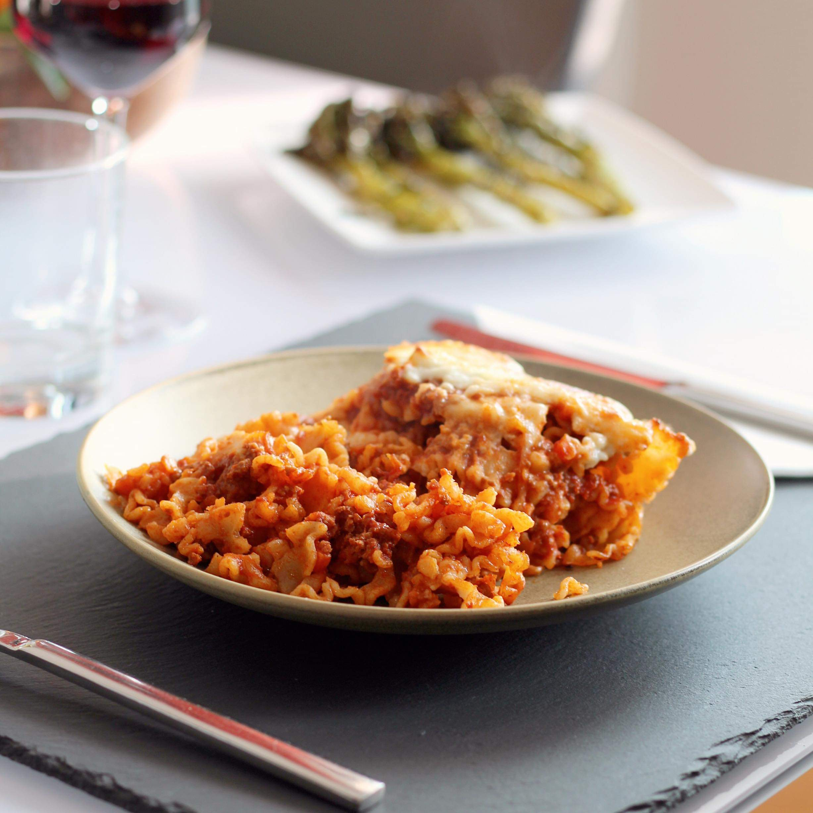

Lasagna

Description
Lasagne are a type of pasta, possibly one of the oldest types, made of very
wide, flat sheets. Either term can also refer to an Italian dish made of
stacked layers of lasagne alternating with fillings such as ragù (ground
meats and tomato sauce), vegetables, cheeses (which may include ricotta,
mozzarella, and parmesan), and seasonings and spices, like Italian
seasoning, such as garlic, oregano and basil.[2] The dish may be topped with
grated cheese, which becomes melted after baking. Typically, cooked pasta is
assembled with the other ingredients and then baked in an oven. The
resulting casserole is cut into single-serving square portions.
Ingredients
- Ground beef
- Spaghetti sauce
- Diced Tomatoes
- Onion
- Garlic
- Dried basil
- Oregano
- Salt
- Black Pepper
- Malfada noodles
- Shredded mozzarella cheese
Steps
-
Heat a large skillet over medium-high heat. Cook and stir beef in the hot
skillet until browned and crumbly, 5 to 7 minutes. Drain and discard
grease. Add spaghetti sauce, tomatoes, onion, garlic, basil, oregano,
salt, and pepper. Cook over low heat until sauce is hot, about 15 minutes.
-
Meanwhile, fill a large pot with lightly salted water and bring to a
rolling boil. Cook mafalda noodles at a boil until tender yet firm to the
bite, about 8 minutes. Drain.
-
Add cooked and drained noodles to the sauce and stir until completely
coated. Sprinkle mozzarella cheese on top.
-
Set an oven rack about 6 inches from the heat source and preheat the
oven's broiler.
-
Place skillet under the hot broil and cook until cheese is golden and
bubbly, 3 to 5 minutes.